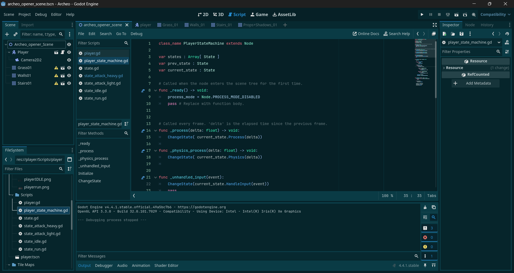
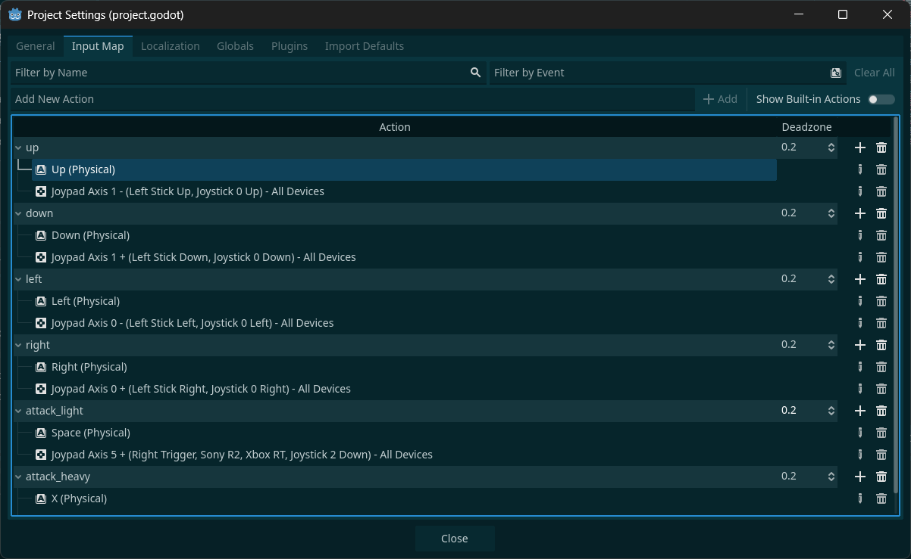
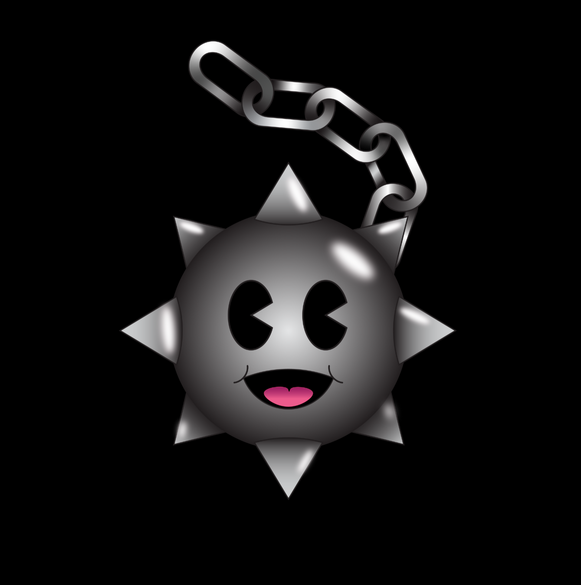
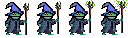
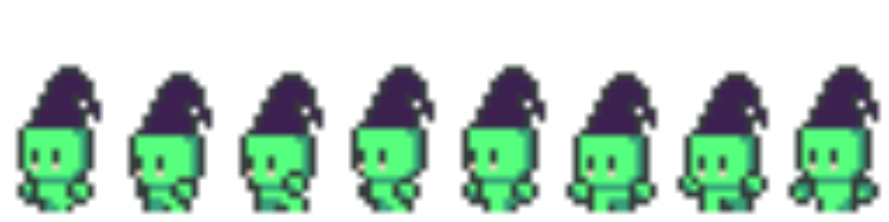

GameMaker Movement Demo
Short movement clip demonstrating player feel, control response, and animation transitions.
I am Hexoden, a student developer focused on practical software that ships. I work across frontend, backend, databases, and deployment, and I also build gameplay systems and interactive prototypes.
Gameplay experiments, pixel art, and implementation screenshots from my game development workflow.
Short movement clip demonstrating player feel, control response, and animation transitions.

Screenshot from gameplay logic code handling animation and state transitions.

Mapping layout for Xbox-style peripheral controls used for gameplay actions and testing.



UK-based builder blending people-first experience, creative problem solving, and practical engineering outcomes.
I am a UK-based student developer with a creative mindset and a people-first background. I have an undergraduate degree in mental health nursing, and that experience has shaped the way I work: with empathy, resilience, attention to detail, and a steady focus on solving real problems for real people.
My working history is broad and hands-on, from a short spell in graphic design and print to hospitality, caring, mental health nursing, and cleaning. That mix has given me adaptability, strong communication skills, and a practical understanding of how different environments run. It also means I am comfortable moving between technical work, creative work, and people-centred work without losing momentum.
Outside of work, I am a genuine animal person. I care for three snakes, two cockatiels, a turtle, three frogs, and several fish tanks, so life at home is full-on in the best way. My music taste is equally committed: hard and fast techno is my happy place, but you will absolutely catch me belting Natasha Bedingfield ballads in the shower. Professionally, I am driven by digital sovereignty, security, full stack development, open source software, digital ownership, data systems, game development, community-driven projects, homelabbing, and building tools that feel practical, secure, and personal all at once. I am also highly interested in future projects and opportunities to contribute to the development and modernisation of medical devices and digital healthcare systems.
The areas I care most about outside pure coding tasks.
I love indie games, retro game aesthetics, Nintendo-style design language, open-world systems, and MRPG-inspired progression loops.
I work across graphical editing, pixel art resprite workflows, and light illustration to support UI, gameplay assets, and visual storytelling.
I am passionate about security, data ownership, open-source tooling, Linux, and practical ways to reduce dependence on big tech ecosystems.
I run a homelab with Proxmox-style virtualization, Docker services, SMB storage, media systems, home network management, and self-hosted AI workflows. I like building infrastructure that is private, useful, and under my control.
Where nursing experience meets practical software, cleaner workflows, and secure systems.
I’m especially interested in projects that modernise old, clunky software that slows down medical staff. I want to help make documentation easier, reduce admin drag, and build systems that connect cleanly, securely, and reliably across teams.
A career-swap progress monitor that connects nursing, creative work, homelabbing, and software.
A practical toolkit for creating end-to-end software.
Responsive, accessible interfaces with modern CSS, component design, and performance-first UI behavior.
REST APIs, auth flows, data modeling, and clean service layers that are maintainable and testable.
Version control, CI basics, deployment automation, and setup of predictable local-to-production workflows.
Core mechanics, player feedback loops, and iteration on movement, progression, and balance systems.
The stack I reach for across web work, game builds, and self-hosted systems.
 HTML5
HTML5 CSS3
CSS3 Java
Java JavaScript
JavaScript TypeScript
TypeScript React
React GameMaker
GameMaker Portainer
Portainer Python
Python Git
Git GitHub
GitHub WP
WP VS Code
VS Code VS
VS Linux
Linux Docker
Docker Proxmox
Proxmox Open Source
Open Source Proton
Proton Raspberry Pi
Raspberry PiThis toolkit reflects how I build: open-source first, self-hosted where it makes sense, and tuned for full stack work, game dev, and homelab systems. This list is not exhaustive.
The smaller focus areas that shape how I think about infrastructure, trust, and software ownership.
Private infrastructure, Docker services, storage, and self-hosted experiments that keep my tools under my control.
Practical security, safer workflows, and systems designed to protect people and data without making the product miserable to use.
Tools, workflows, and community-minded projects that stay transparent, reusable, and easy to build on.
Frontend, backend, deployment, and data systems tied together into software that feels coherent from start to finish.
Short-form writing, build logs, and ideas I want to keep moving forward.
Notes on data ownership, self-hosting, and building systems that respect the people who use them.
Thoughts on making secure systems that are still usable for real people doing real work.
Quick write-ups from homelab setups, software tweaks, and the process of turning ideas into working projects.
These cards now open dedicated project pages with technical details and links.
A self-hosted, multi-user AI interface focused on local-first privacy with LAN access and Docker-based deployment.
A command manager that stores, searches, and launches workflows via global hotkeys, dashboard tools, and CLI.
Planned work that reflects the direction I want to grow in: study, game creation, and a more polished creative portfolio.